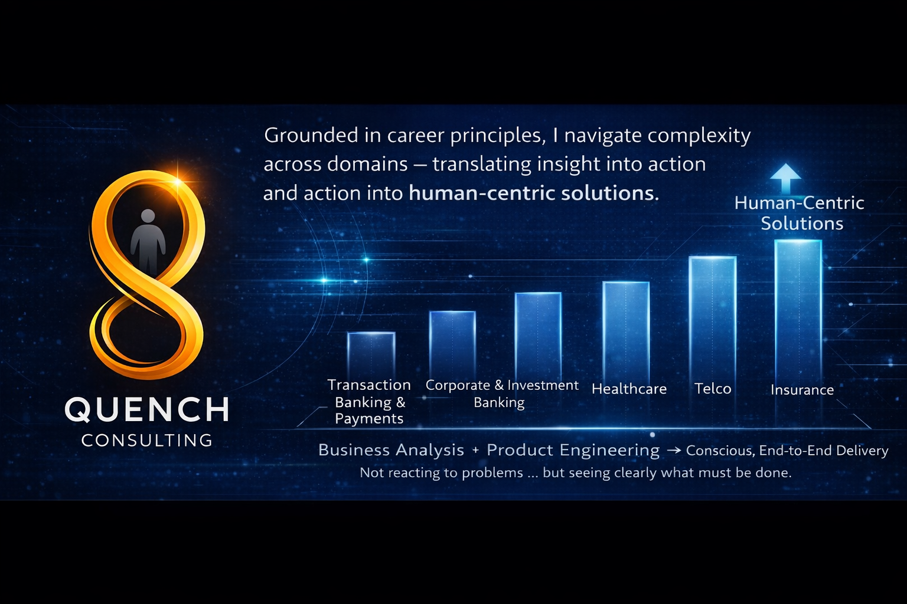

AI-Augmented Domain Strategist | Banking & Payments Transformation | Domain-Driven Architecture | Building Human Trust in an AI-Driven Digital World
Delivering Change as Product Owner, Principal Business Analyst & Program Leader
Strategic Portfolio Thought Leadership Professional ReviewsMy approach is that of an AI-augmented domain strategist — using emerging AI capabilities to accelerate analysis while grounding decisions in deep domain understanding, stakeholder trust and practical delivery experience.
Technology alone does not create transformation. Sustainable transformation emerges when business intent, customer value and execution discipline converge.
Accomplished consulting and transformation leader with more than two decades of experience translating complex business challenges into executable technology outcomes across retail, commercial, corporate and investment banking environments.
Expertise spans Payments, Trade Finance, Lending, Mortgages, Supply Chain Finance, Treasury Services, Pricing & Billing, Trading Platforms, Digital Banking, API Ecosystems, Cloud Adoption, Data Migration and Regulatory Transformation.
Extensive experience in impact assessments, gap analysis, target-state solution design, platform modernisation, innovation workshops, hackathons, enterprise governance and strategic delivery leadership.
Vision, Roadmaps, Platform Modernisation, Target-State Design
BABOK, Process Re-engineering, User Stories, Requirements Engineering
ISO20022, SWIFT, RTGS, ACH, NPP, Cross-Border Payments
APIs, Microservices, Open Banking, Vendor Integration
Relationship Based Pricing, Revenue Optimisation
Program Governance, Agile Delivery, Stakeholder Leadership
Data Migration, Risk, Audit Readiness, Regulatory Alignment
ISO20022 • CBPR+ • RTGS Impact Assessment
NPP • PayTo • PEGA Transformation
Relationship Based Pricing • Commercial Optimisation
Trading Platform Transformation
Global Clearing Gateway
Corporate Payments Portal